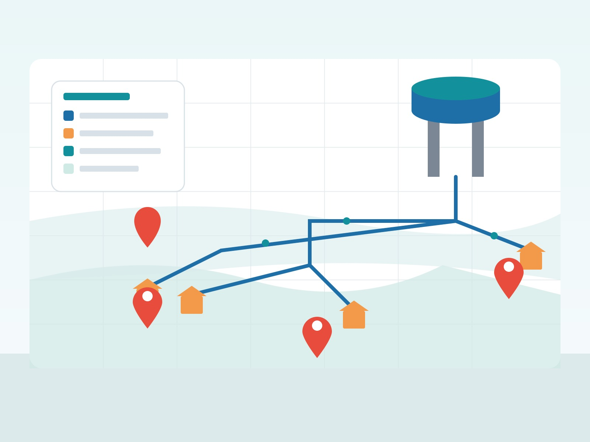
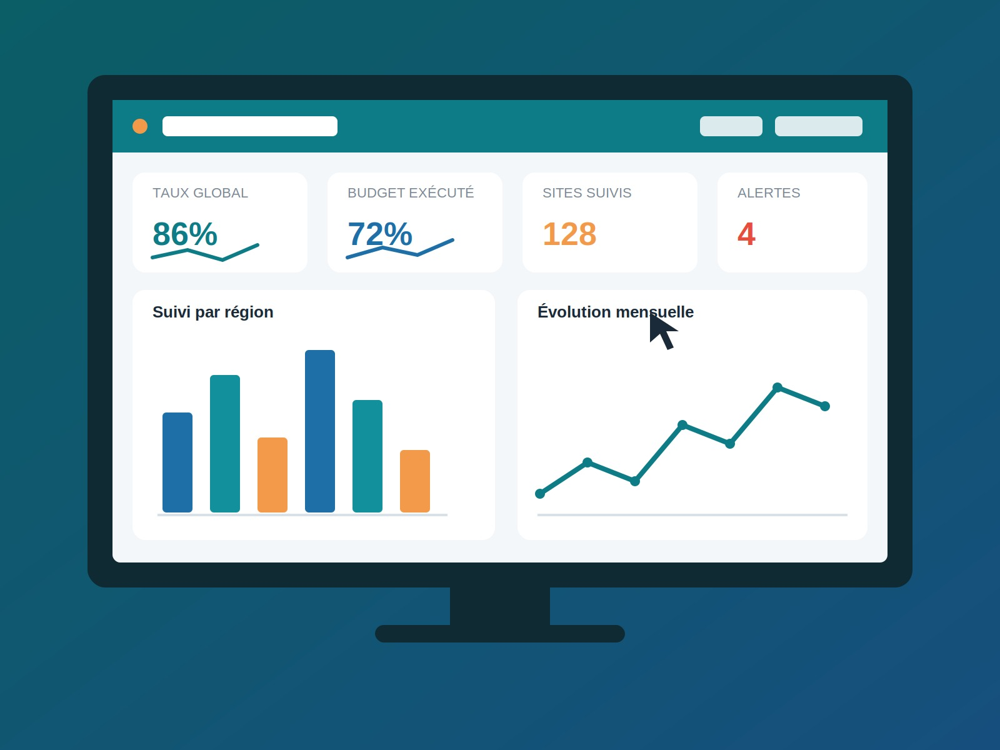
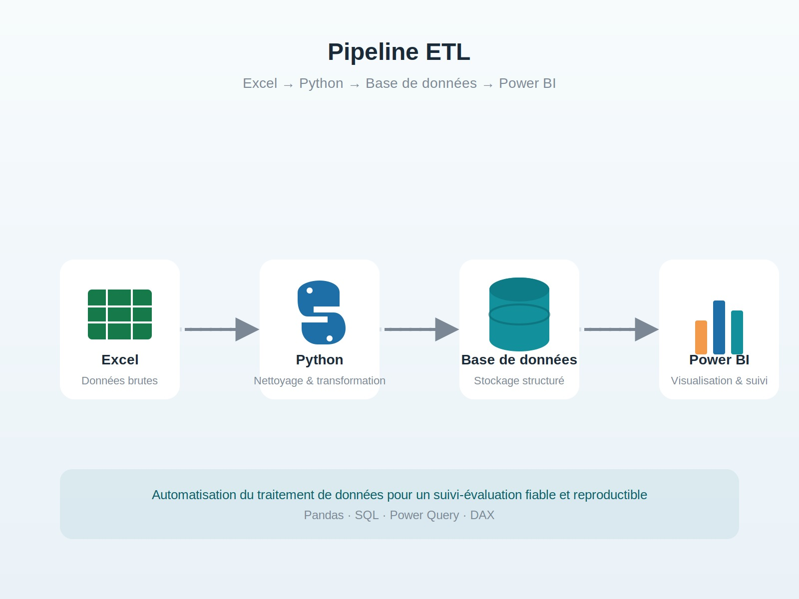
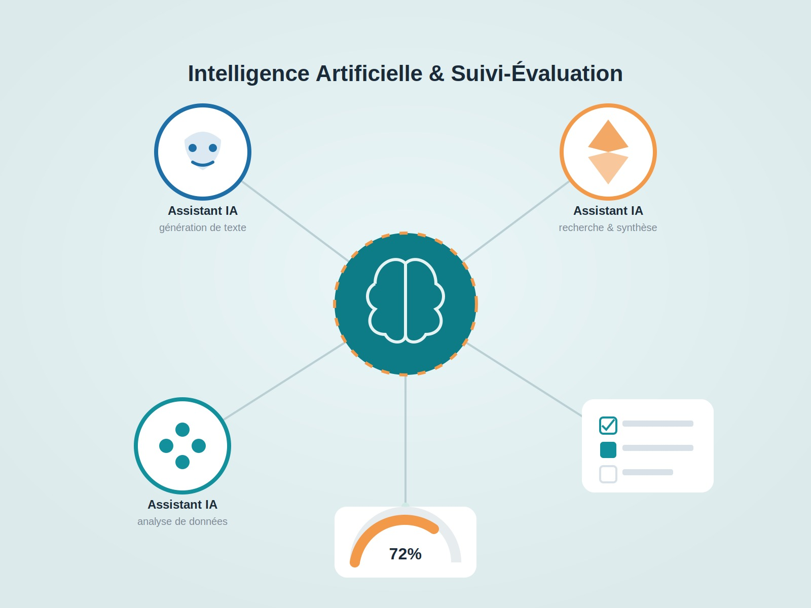
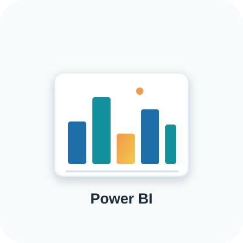

Des données fiables pour des décisions durables.
Je suis NTONDELE MPELA Floriant, Économètre et Data Manager spécialisé dans le suivi-évaluation des projets d'investissement public. J'accompagne les institutions dans la collecte, le traitement, l'analyse et la valorisation des données afin de faciliter une prise de décision fondée sur des preuves.
Python, R, SPSS, Stata, Excel et Power BI pour transformer les données en informations exploitables.
KoboToolbox, CSPro, Excel et contrôle qualité des données sur le terrain.
Évaluation de projets, indicateurs de performance, SIG avec QGIS et tableaux de bord décisionnels.
Des outils maîtrisés pour accompagner les projets depuis la collecte des données jusqu'à la prise de décision.
Outils maîtrisés
Projets analysés
Années d'expérience
Analyse de données • ETL • Automatisation
Versionnement • Collaboration • Portfolio
Développement Web • Python • Git
Analyse • Tableaux de bord • Reporting
Statistiques • Économétrie • Modélisation
Tableaux de bord • DAX • Reporting décisionnel
Analyse statistique • Tests d'hypothèses
Collecte mobile • Contrôle qualité terrain
SIG • Analyse spatiale • Cartographie
J'accompagne les institutions, les entreprises et les organisations dans la collecte, l'analyse et la valorisation des données pour une prise de décision fondée sur des preuves.
Conception de questionnaires, KoboToolbox, CSPro, contrôle qualité et supervision des enquêtes.
Python, Excel, SPSS, Stata et R pour produire des analyses fiables et reproductibles.
Création de tableaux de bord Power BI et suivi des indicateurs de performance.
Conception d'indicateurs, évaluation de projets et accompagnement des décideurs.
Utilisation de l'intelligence artificielle pour automatiser les analyses et améliorer les évaluations.
Production de cartes interactives et analyses spatiales avec QGIS.
Découvrez quelques projets illustrant mon expertise en collecte, analyse et valorisation des données pour le suivi-évaluation des projets.
Évaluation des établissements hospitaliers, collecte de données, analyse des indicateurs de performance et recommandations.
Voir le projetConception de questionnaires, collecte des données, analyse statistique et production de rapports d'évaluation.
Voir le projet
Collecte, traitement, cartographie et analyse des données relatives aux infrastructures d'alimentation en eau potable.
Voir le projet
Développement de tableaux de bord interactifs pour le suivi des indicateurs et l'aide à la prise de décision.
Voir le projet
Automatisation de l'importation, du nettoyage, de la transformation et de la préparation des données avec Python.
Voir le projet
Exploitation de l'intelligence artificielle pour automatiser les analyses, assister la rédaction et améliorer les évaluations de projets.
Voir le projetMon parcours académique, professionnel et les formations qui renforcent continuellement mes compétences en analyse de données, intelligence artificielle, Business Intelligence et suivi-évaluation.
Formation spécialisée en économétrie, statistiques avancées, analyse quantitative, modélisation et évaluation des politiques publiques.
Utilisation de ChatGPT, Gemini, Claude, NotebookLM et d'autres outils d'IA pour améliorer la collecte, l'analyse des données, la rédaction de rapports et l'évaluation des projets.
Analyse de données avec Pandas, NumPy, Matplotlib, automatisation des traitements, pipelines ETL et développement de scripts Python.

Création de tableaux de bord interactifs, modélisation des données, indicateurs de performance (KPI), DAX et visualisation décisionnelle.
Collecte, traitement, analyse et évaluation des projets d'investissement public, conception d'outils de collecte, suivi des indicateurs, production de rapports et aide à la décision.
Business Intelligence & visualisation de données
Collecte de données mobile sur le terrain
Dakar Institute of Technology (DIT) – Dakar, Sénégal
Statistiques appliquées et économétrie
Systèmes d'information géographique et cartographie
Intelligence artificielle appliquée à l'analyse de données
Vous souhaitez collaborer sur un projet de collecte, d'analyse de données, d'intelligence artificielle ou de suivi-évaluation ? N'hésitez pas à me contacter. Je serai ravi d'échanger avec vous.
Data Manager
Économètre
Intelligence Artificielle appliquée au Suivi-Évaluation
Une question, un projet ou une opportunité de collaboration ? Je vous réponds généralement sous 24 heures.